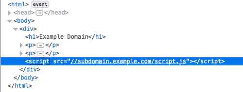

Second-order subdomain takeovers
Second-order subdomain takeovers or "
broken link hijacking", are vulnerable
subdomains used to serve content on the target's website.
Hijacking a host that is used somewhere on the
page can ultimately lead to stored cross-site scripting, since the adversary can load arbitrary client-side code on
the target page.
This mean we can easily expand your scope by inspecting source code and mapping out all the
hosts that the target relies on.
Example of a source code Bibliography:
https://www.hackerone.com/application-security/guide-subdomain-takeovers